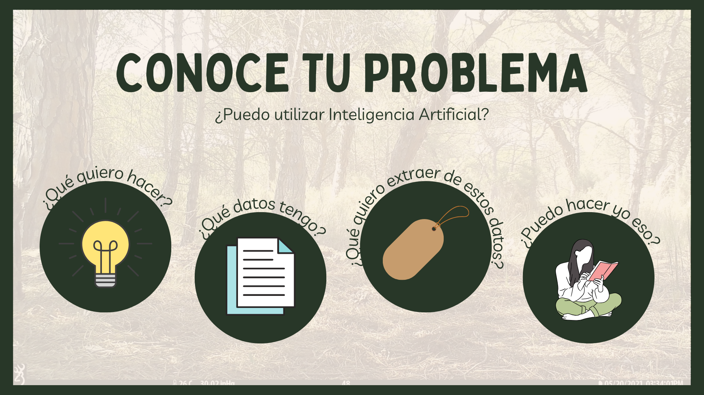

El papel de la IA en la ecología, cómo transformar imágenes en datos: Opciones, desafíos y soluciones
El seminario pretende explorar la creciente intersección entre la inteligencia artificial (IA) y la ecología, centrándose en cómo la IA puede transformar imágenes en datos para impulsar la investigación y la conservación de la naturaleza. El seminario aborda la definición de IA y su relevancia en el contexto ecológico, destacando casos prácticos que ilustran su aplicación en la recolección y análisis de datos ecológicos. El objetivo principal de la charla es familiarizar a las personas participantes con el potencial y las aplicaciones prácticas de la IA en el campo de la ecología. Se discutirán herramientas y técnicas específicas de IA que ya están disponibles y se exploran errores comunes que suelen cometerse desde la perspectiva de la ecología al utilizar estas tecnologías. Además, se enfatiza la importancia de una colaboración interdisciplinaria entre ecólogos y expertos en IA para abordar los desafíos ambientales de manera efectiva. En resumen, la charla busca inspirar a los participantes a considerar cómo la IA puede mejorar y ampliar su trabajo en la conservación y comprensión de los ecosistemas naturales.
Links a webs de IA surgidas durante las preguntas:


